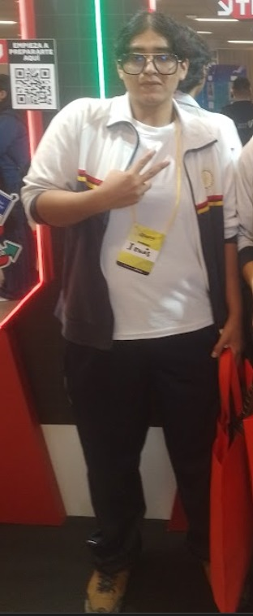
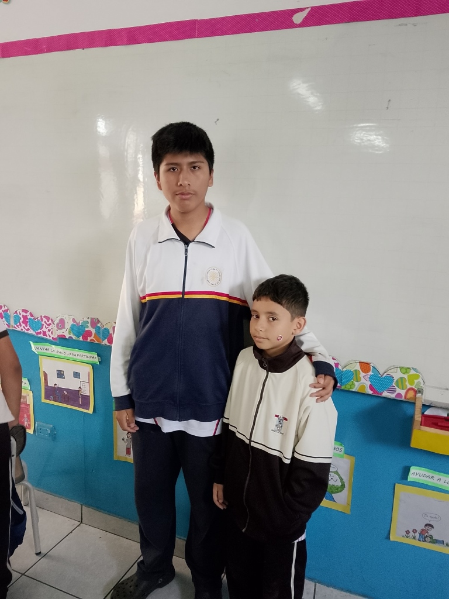
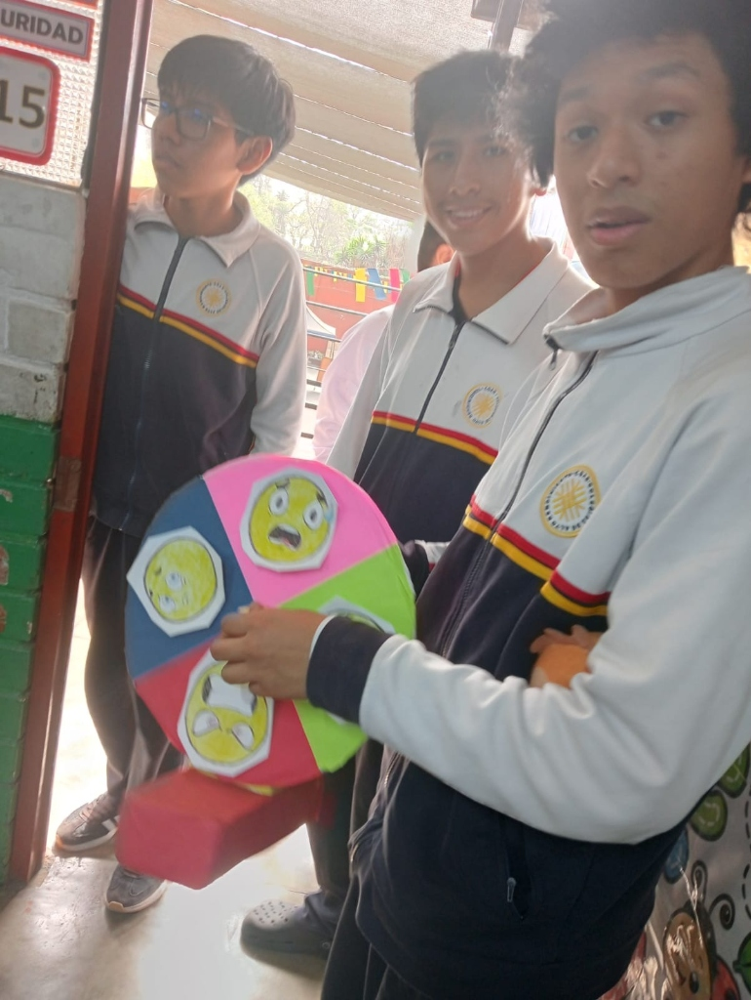

"Excelencia con Empatía: Un COAR donde tu voz cuenta"
Porque el alto rendimiento académico no debe sacrificar el bienestar humano. Una gestión participativa, cercana a cada dormitorio y comprometida con el balance integral de la comunidad residente.

Candidato a Alcalde del Municipio Escolar COAR
"Sé lo que significa estar lejos de casa, afrontar las exigencias del Bachillerato Internacional y equilibrar la vida en residencias. Liderazgo COAR no nació para prometer imposibles, sino para convertir nuestras vivencias diarias en soluciones reales y solidarias."
Joel Jonas se destaca por su permanente disposición al diálogo, su cercanía con compañeros de 3ro, 4to y 5to grado, y su capacidad de intermediación constructiva con el equipo directivo y docente. Su visión integra el orgullo por el rigor académico COAR con una profunda defensa de la salud emocional y la convivencia fraterna.
Un plan estratégico diseñado para responder a los verdaderos desafíos de la vida estudiantil y residencial en el Colegio de Alto Rendimiento.
Descompresión del estrés académico del currículo COAR e IB, con redes de acompañamiento y módulos de escucha activa.
Hacer del campus un segundo hogar con mejores condiciones de descanso, alimentación supervisada y fraternidad.
Responsabilidad ecológica práctica: huerto biointensivo, reciclaje tecnológico y cuidado del patrimonio natural del COAR.
Poner la tecnología y los recursos abiertos al servicio del éxito académico colectivo en el Bachillerato Internacional.
Un equipo diverso, talentoso y con vocación de servicio que acompaña a Joel Jonas Mendoza para transformar el COAR.

🏀 Deportes & E-SportsLíder deportivo con proyección internacional. Becado en España, promueve la activación física, ligas inter-aulas de alta competencia, e-sports y pausas activas pre-exámenes.
Lidera la transición verde con recolección de chatarra tecnológica (RAEE), huerto escolar ecológico y auditorías de ahorro hídrico.

🎭 Cultura & BienestarPromueve la expresión artística, dinámicas lúdicas de integración con la ruleta de emociones, noches de talento "COAR Fest" y talleres de salud mental.
Liderazgo implacable en modernización: repositorio "COAR Share", régimen estricto de préstamo de calculadoras GDC y optimización tecnológica radical.
En Liderazgo COAR construimos las propuestas contigo. Envía tus dudas, sugerencias o necesidades para incorporarlas de inmediato a nuestro plan de acción.
Tu opinión es confidencial o pública según lo decidas. Todas las ideas son revisadas por el equipo.
Todo lo que necesitas saber sobre la viabilidad, el plan de trabajo y el compromiso de Liderazgo COAR.
Joel Jonas y el equipo han diseñado cada propuesta basándose en los lineamientos vigentes del Ministerio de Educación y el reglamento interno del COAR. No prometemos cambios arbitrarios; planteamos mesas técnicas de diálogo quincenales sustentadas en datos de convivencia y bienestar estudiantil, demostrando a las autoridades que un estudiante equilibrado rinde mucho mejor académicamente.
Entendemos a fondo la exigencia de las evaluaciones internas, la monografía y CAS. Por ello, las actividades culturales y deportivas serán modulares y de corta duración (pausas activas de 10 min, ligas de fin de semana, talleres condensados), diseñadas específicamente para liberar tensión sin restar horas vitales de descanso o estudio.
El formulario del buzón permite el envío completamente anónimo de cualquier sugerencia o alerta de convivencia. Ningún dato sensible o personal es compartido sin el consentimiento del estudiante, garantizando un canal libre de represalias y con escucha empática garantizada.
¡Todos los estudiantes de 3°, 4° y 5° de Secundaria! Tras la elección, abriremos comisiones abiertas de apoyo para cada regiduría (Comité de Deportes, Brigada Campus Verde, Equipo Editor de COAR Share y Colectivo de Bienestar Emocional). El municipio es de todos.